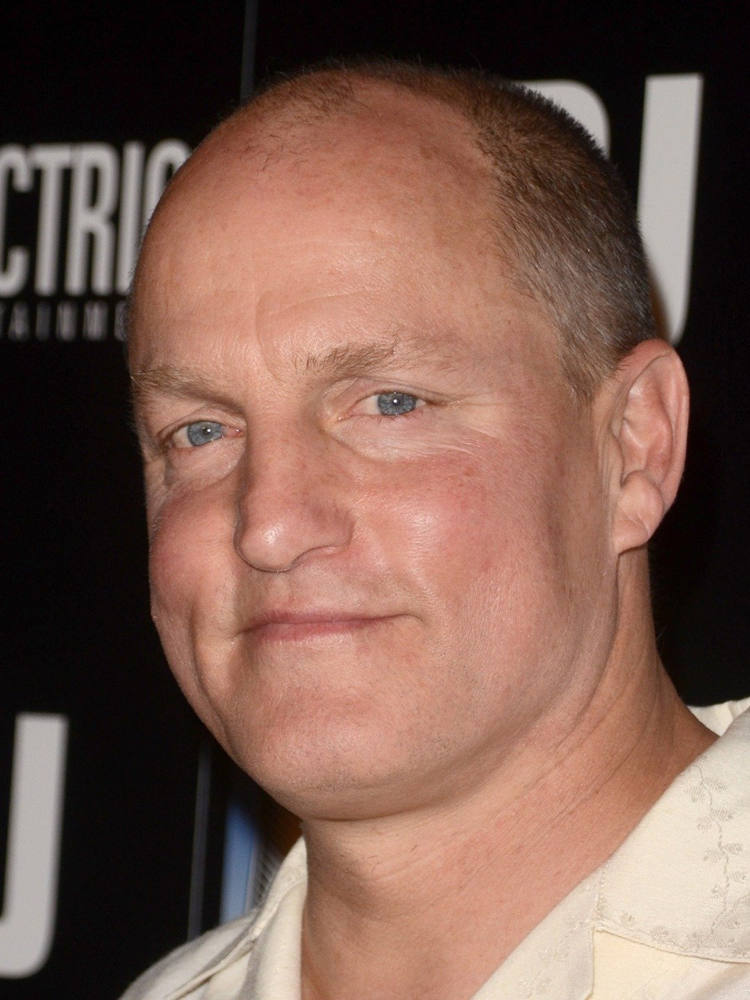
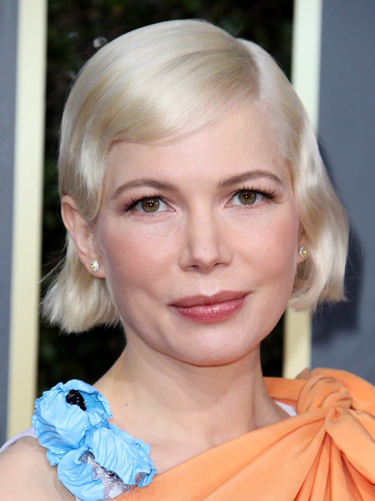

Edward Thomas Hardy CBE (born 15 September 1977) is an English actor and producer. After studying acting at the Drama Centre London, he made his film debut in Ridley Scott's Black Hawk Down (2001). He has since been nominated for the Academy Award for Best Supporting Actor, two Critics' Choice Movie Awards and two BAFTA awards.
Hardy has also appeared in such films as Star Trek: Nemesis (2002), RocknRolla (2008), Bronson (2008), Warrior (2011), Tinker Tailor Soldier Spy (2011), Lawless (2012), Locke (2013), The Drop (2014), and The Revenant (2015), for which he received a nomination for the Academy Award for Best Supporting Actor. In 2015, Hardy portrayed "Mad" Max Rockatansky in Mad Max: Fury Road and both Kray twins in Legend. He has appeared in three Christopher Nolan films: Inception (2010), The Dark Knight Rises (2012) as Bane, and Dunkirk (2017) as an RAF fighter-pilot. He starred as Eddie Brock / Venom in the 2018 anti-hero film Venom.
Hardy's television roles include the HBO war drama mini-series Band of Brothers (2001), the BBC historical drama mini-series The Virgin Queen (2005), Bill Sikes in the BBC's mini-series Oliver Twist (2007), ITV's Wuthering Heights (2009), the Sky 1 drama series The Take (2009), and as Alfie Solomons in the BBC historical crime drama series Peaky Blinders (2013–present). He created, co-produced, and took the lead in the eight-part historical fiction series Taboo (2017) on BBC One and FX.[1]
Hardy has performed on both British and American stages. He was nominated for the Laurence Olivier Award for Most Promising Newcomer for his role as Skank in the production of In Arabia We'd All Be Kings (2003), and was awarded the 2003 Evening Standard Theatre Award for Outstanding Newcomer for his performances in both In Arabia We'd All Be Kings and for his role as Luca in Blood. He starred in the production of The Man of Mode (2007) and received positive reviews for his role in the play The Long Red Road (2010). In 2020, he also contributed narration work to the Amazon docuseries All or Nothing: Tottenham Hotspur.
Hardy is active in charity work and is an ambassador for the Prince's Trust.[2][3] He was appointed Commander of the Order of the British Empire (CBE) in the 2018 Birthday Honours for services to drama.
Woody Harrelson

Harrelson's father was Charles Voyde Harrelson. He was a contract killer. He was arrested for the killing of Federal Judge John H. Wood, Jr. by rifle fire in 1979 in San Antonio.[2]
Harrelson is a vegan.[3][4] He was on postage stamps issued in 2011 as one of PETA's 20 famous vegetarians.[5] He was named PETA's Sexiest Vegetarian in 2012 (along with Jessica Chastain).[6]
He would like the legalization of marijuana and hemp. He is also an environmental activist. Harrelson is a supporter of the 9/11 truth movement. He has supported reopening an investigation into the September 11 terrorist attacks.[7]
In 1985, Harrelson married Nancy Simon, daughter of playwright Neil Simon, in Tijuana. The two meant to divorce the following day, but the storefront marriage/divorce parlor was closed when they had returned to it. The two remained married for ten months.[8]
On December 28, 2008, Harrelson married Laura Louie, his girlfriend since 1987. The couple have three daughters, Deni Montana (born February 28, 1993), Zoe Giordano (born September 22, 1996), and Makani Ravello (born June 3, 2006). Laura is his former assistant. She is a co-founder of Yoganics, an organic food delivery service.
Harrelson was arrested in Columbus, Ohio in 1982 for disorderly conduct. He was found dancing in the middle of the street.[9] He was also charged with resisting arrest after he ran from the police and assault after he hit one of the officers.[9] Harrelson avoided jail time by paying a $390 fine.[10]
On June 1, 1996, Harrelson was arrested in Lee County, Kentucky. He symbolically planted four hemp seeds. This was to challenge the state law which did not distinguish between industrial hemp and marijuana. Harrelson was acquitted of these charges in 2000.[11]
In 2002, Harrelson was arrested in London after an incident in a taxi that ended in a police chase. Harrelson was taken to a London police station and later released on bail.[12] The case was later dismissed after Harrelson paid the taxi driver involved in the incident £550 ($844).[13]
In 2008, TMZ photographer Josh Levine filed a lawsuit against Harrelson. It was for an alleged attack outside a Hollywood nightclub in 2006. Harrelson first became known for his role as bartender Woody Boyd on the NBC sitcom Cheers (1985–1993).
Michelle Williiams

Michelle Ingrid Williams is an American actress. Known for her roles in small-scale independent
productions with dark or tragic themes, Williams is the recipient of several accolades,
including two Golden Globe Awards, a Primetime Emmy Award, and nominations for four Academy Awards,
and a Tony Award. Michelle Ingrid Williams (born September 9, 1980) is an American actress. Known for her roles in small-scale independent productions with dark or tragic themes, Williams is the recipient of several accolades, including two Golden Globe Awards, a Primetime Emmy Award, and nominations for four Academy Awards, and a Tony Award.
Daughter of the politician and trader Larry R. Williams, she was raised in Kalispell and San Diego. She began her career with television guest appearances and made her film debut in the family film Lassie in 1994. At 15, she gained emancipation from her parents, and soon achieved recognition for her leading role in the television teen drama series Dawson's Creek (1998–2003). This was followed by low-profile films, before having her breakthrough with the drama film Brokeback Mountain (2005), for which she received a nomination for the Academy Award for Best Supporting Actress.
Williams went on to gain critical acclaim for playing emotionally troubled women coping with loss or loneliness in the independent dramas Wendy and Lucy (2008), Blue Valentine (2010), and Manchester by the Sea (2016). For the last two of these she received nominations for the Academy Award for Best Actress and the Academy Award for Best Supporting Actress, respectively. She won two Golden Globes for portraying Marilyn Monroe in the drama My Week with Marilyn (2011) and Gwen Verdon in the miniseries Fosse/Verdon (2019), in addition to a Primetime Emmy Award for Outstanding Lead Actress for the latter. Her highest-grossing releases came with the thriller Shutter Island (2010), the fantasy film Oz the Great and Powerful (2013), the musical The Greatest Showman (2017), and the superhero film Venom (2018). On Broadway, she starred in revivals of the musical Cabaret in 2014 and the drama Blackbird in 2016, for which she received a nomination for the Tony Award for Best Actress in a Play.
Williams is an advocate for equal pay.